Dr. Edward Maynard, dentist and firearms inventor, repaired the teeth of several Whistler family members while visiting St. Petersburg in the winter of 1845–1846.
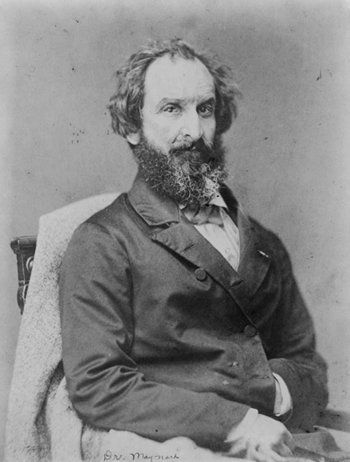
Dr. Edward Maynard. After 1870. Photograph. Library of Congress Prints and Photographs Division, Washington, DC (ID 99472659). [full resolution image]
Image 330
Layout of the room in the misses Benson’s boarding house occupied by Dr. Edward Maynard from 20 September 1845 to sometime in April 1846, drawn in a letter to his wife, Ellen Maynard
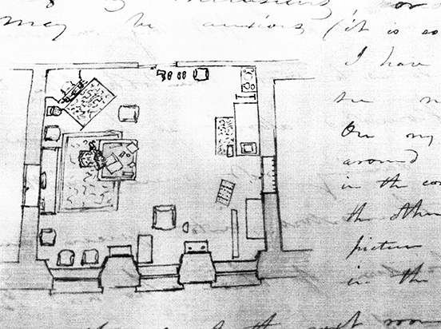
Edward Maynard, letter no. 3, St. Petersburg, Saturday morning, November 8, 1845 (original letter in the possession of his descendant, Cynthia McGrath) [full resolution image]
Image 331
Drozhki drawn by Dr Edward Maynard in a letter to his wife, Ellen Maynard
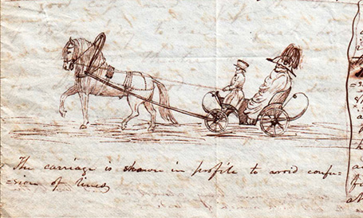
Edward Maynard, letter no. 1, St. Petersburg, Russia, Monday night, September 22, 1845 (original letter in the possession of his descendant, Cynthia McGrath) [full resolution image]
Image 332
Eastern saddle and accoutrements seen in the Armory at Tsarskoe Selo, to which Colonel Todd, the American envoy, took Dr. Edward Maynard in September 1845, drawn by the latter in a letter to his wife, Ellen Maynard
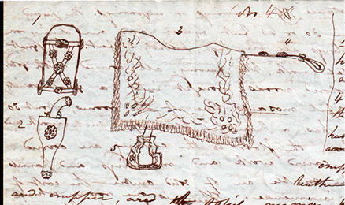
Edward Maynard, letter no. 1, St. Petersburg, Russia, Friday night, September 26, 1845 (original letter in the possession of his descendant, Cynthia McGrath) [full resolution image]
Image 333
Masked figure seen at the New Year’s Eve ball in the Assembly Hall of the Nobility, to which Colonel Todd, the American envoy, took Dr. Edward Maynard, drawn by the latter in a letter to his wife, Ellen Maynard
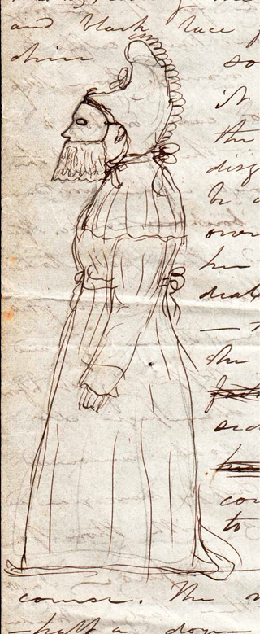
Edward Maynard, letter no. 7, St. Petersburg, Tuesday morning [2 January 1846] (original letter in the possession of his descendant, Cynthia McGrath) [full resolution image]
Image 334
Portraits of Emperor Nicholas I and his brother Grand Duke Mikhail Pavlovich, drawn by Dr. Edward Maynard in a letter to his wife, Ellen Maynard, in January 1846
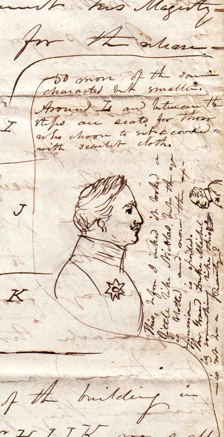
Edward Maynard, letter no. 8, St. Petersburg, Saturday evening January 12, 1846 (original letter in the possession of his descendant, Cynthia McGrath) [full resolution image]
Image 335
Ice-hills at Catherinehoff visited by Dr. Edward Maynard, and drawn by him in a letter to his wife, Ellen Maynard, in January 1846
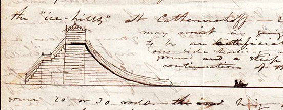
Edward Maynard, letter no. 8, St. Petersburg, Monday P.M. [14 January 1846] (original letter in the possession of his descendant, Cynthia McGrath) [full resolution image]
Image 336
Reindeer sleigh ridden in by Dr. Edward Maynard, and drawn in a letter to his wife, Ellen Maynard
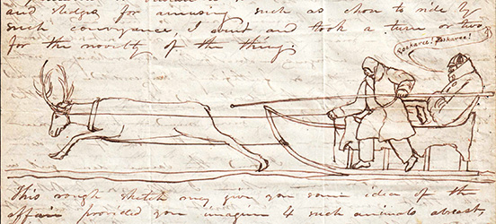
Edward Maynard, letter no. 8, St. Petersburg, Wednesday 23rd January 1846 (original letter in the possession of his descendant, Cynthia McGrath) [full resolution image]
Image 337
Ring awarded to Dr. Edward Maynard by Her Imperial Highness Grand Duchess Elena Pavlovna in March 1846 for his dental services, drawn in a letter to his wife, Ellen Maynard
Edward Maynard, letter no. 11, St. Petersburg, Sunday morning, March 10, 1846, (original letter in the possession of his descendant, Cynthia McGrath) [full resolution image]
Image 338
Schematic for Maynard’s priming lock mechanism, patented in 1845
George Washington Parmly, Maynard’s dentist colleague and friend, who traveled to St. Petersburg with him
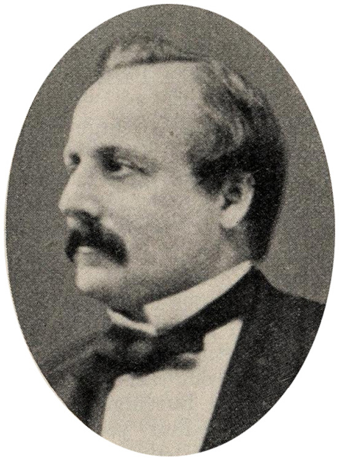
George Washington Parmly. c. 1865. From a photograph taken in Paris, France. Lawrence Parmly Brown, The Greatest Dental Family (1923), p. 25; reprinted from The Dental Cosmos, March, April, and May 1923. [full resolution image]
Image 340
Lucy (Finley) Atkinson, cousin of the misses Benson
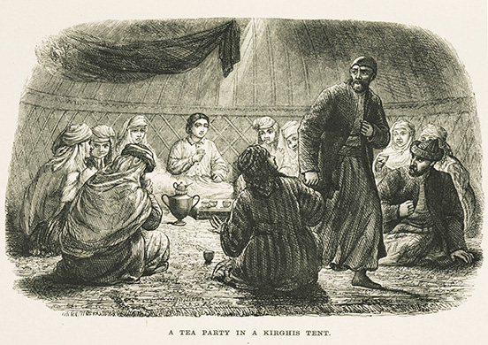
Thomas Atkinson (1799–1861). Tea Party in a Kirghis Tent. Sketch. (Atkinson, Recollections, facing p. 204) [full resolution image]
Image 341
Thomas Atkinson, husband of Lucy (Finley) Atkinson
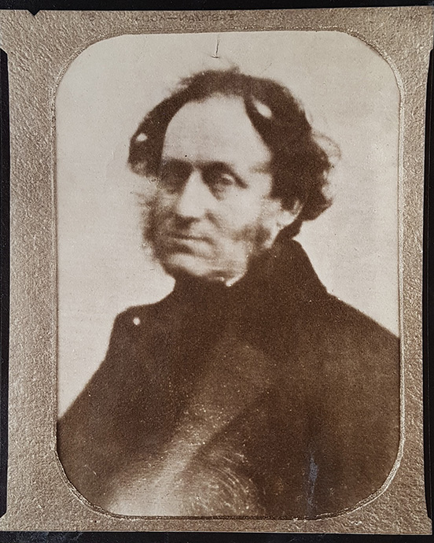
“The only known photograph of Thomas Witlam Atkinson” (Nick Fielding, Siberian Steppes website, accessed 21 February 2023)
Image 342
Count Mikhail Nikolaevich Muraviev, to whose daughter Lucy Finley was governess